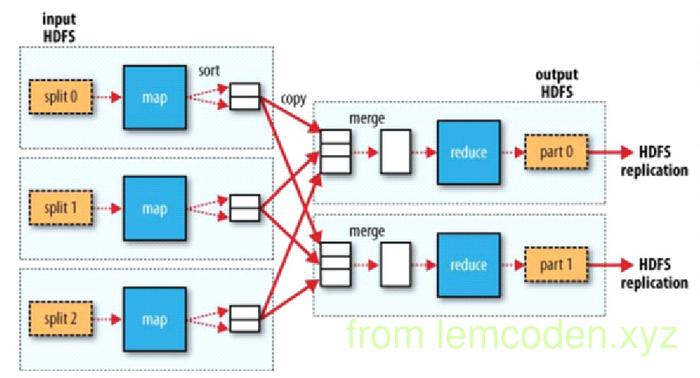
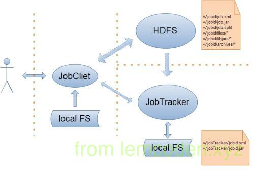
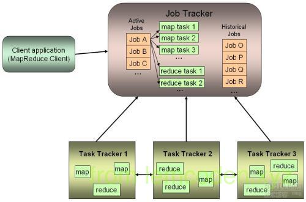

mapreduce&yarn笔记总结 01
背景,
为了体现分布式计算的优点,将数据分而治之再进行相应方面的计算.hadoop提出了mapreduce计算模型
计算模型

- map 端负责将拆分出来的数据进行映射,变换,过滤.体现在一进N出
- reduce 端负责将数据整合归纳,缩小,分解,一般是一组数据进N出
- 不管是map还是reduce处理的数据结构基本都是<key,value>的形式划分的
- 最基本的数据格式确定后,会有数据迁移更加细致的流程
- 首先分布式计算是基于分布式文件系统的,而分布式文件系统的存储模型以块为单位,所以分布式的物理模型以split(分片)为的单位
- 默认每个split对应一个map进程
- split的数据对应map计算之后并不会直接写入磁盘而是先写入环形缓冲区 || 因为每一次IO都会调用linux内核,所以不是一条记录IO一次,而是缓冲区写满后进行一次性IO
- 跳过中间阶段,看reduce,reduce会根据之前数据的partion数量对应开启reduce进程.
- 默认一个reduce进程对应一个partition,再次体现分而治之的理念
- map段的数据经过buffer之后会为reduce分区作准备,所以会先进行分区,对key进行取模操作划分出partition,会将数据结构转换成<key,value,partition>的形式.
- 进行partition之后,为减少reduce的拉取IO操作(总不能一条数据拉取查找一次吧),会将partition按照进行再次分片(split).
- 数据进行分片之后,再按照partition进行小文件排序(sort),同时还会进行key的第二次排序,关于为什么还会进行key的排序,到reduce端会解释
架构设计
遥远的hadoop1.x
1 | (ps:因为找不到合适的图,就分开为client端和job端的架构) |
计算模型出现后,就需要搭建整体的框架,首先我们说我们的主要角色有client,JobTracker,TaskTracker

我们client端主要做四件事:
- 会根据每次的计算数据,咨询NN元数据(block) => 算出spilt切片清单
- 生成计算程序未来运行相关的配置文件
- 将jar包,split的切片清单,配置文件上传到HDFS目录当中
- cli调用jobTracker,通知启动一个计算程序,并且告知文件都放在了hdfs的哪些地方

- jobTracker会根据cli提交的信息,去HDFS上寻找Jar包程序,split清单,以及配置文件
- 根据拿到的切片清单和配置文件,以及收到的TaskTracker汇报的资源,最终确定每一个spilt应该去往哪个个节点
- TaskTracker会在汇报心跳的时候拿到分配给自己的人物信息
- TaskTrakcer取回任务后会从hdfs下载jar包,xml配置文件到本机
- TaskTraker会根据xml配置文件以及JobTrakcer的任务描述,从jar包中抽取出mapreduce任务运行
这个是hadoop1.x的mapreduce的任务调度,到了hadoop2.x的时候这种架构被重新修改,why?
- 任务调度框架jobTracker和TaskTracker使用的是主从架构,那必将出现两个问题,一个是单点故障问题
- 另一个则是主节点压力过大的问题
- JobTracker同时负责资源的调度以及计算任务管理,两者耦合,如果引入新的计算框架则不能复用资源管理
改进后的Hadoop2.x
hadoop2.x后将JobTraker的资源调度功能抽出,封装为Yarn资源管理框架,并配置了高可用.
hadoop2.x的计算与资源管理架构如下

主要角色有client,ResourceManager,NodeManager,ApplicatioMaster以及Container
- client与之前的流程一致
- client会将job提交到ResourceManager
- ResourceManger接收到job请求后,会在集群当中挑一台不忙的节点,在NodeManager中启动一个ApplicationMaster进程
- ApplicationMaster进程启动之后,会去HDFS下载Splite清单以及配置文件,并将配置清单发送ResouceManager,申请Container
- ResouceManager会根据清单计算出使用多少资源,并将根据现有资源通知NodeManager启动相应的Container容器
- Container向App Mstr(Application Master)反向注册,此时App Mstr才知道有多少Container可以执行任务
- App Mstr会向Container发送Map Task消息.
- Container受到消息后,会从hdfs下载jar包,并通过反射取出对象执行MapReduce任务
相较于Hadoop1.x,2.x的框架很好的解决的1.x框架出现的问题:
- 单点故障
- App Mstr由ResouceManager监控管理,所以当App Mstr没有心跳时,RM(Resource Manager)会触发失败重试机制,ResourceManager会在其他节点重新启动个App Mstr
- ResourceManager本身可以配置高可用
- Container 也会有失败重试
- 压力过大问题
- yarn中每个计算程序自有一个AppMaster,每个AppMaster之负责自己计算程序的任务调度.
- AppMasters是在不同的节点中启动的,默认有了负载的光环
- 资源管理与任务调度耦合
- yarn只负责资源管理,不负责具体的任务调度
- yarn作为资源管理框架可以被其他计算程序复用(只需要继承AppMaster类就可以)